AirTran Airways [wiki]
AirTran Airways (stylized as ɑirTran) was an American low-cost airline that was originally headquartered in Orlando, Florida and ceased operation following its acquisition by Southwest Airlines.
AirTran Airways was established in 1993 as Conquest Sun Airlines by the management of two small airlines: Destination Sun Airways and Conquest Airlines, with Conquest Airlines co-founder Victor Rivas being heavily involved in the establishment of Conquest Sun. The airline was purchased by the AirTran Corporation in 1994 and was renamed to AirTran Airways. The airline was later spun off under the new Airways Corporation holding company by the AirTran Corporation
The airline and the Airways Corporation holding company was purchased in 1997 by the ValuJet holding company which owned the struggling ValuJet Airlines. The ValuJet holding company became known as AirTran Holdings and merged ValuJet Airlines into AirTran Airways. ValuJet Airlines was renamed "AirTran Airlines" before it was merged into AirTran Airways.
AirTran Airways and parent AirTran Holdings were acquired by Southwest Airlines on May 2, 2011, and gradually integrated with the final revenue flight operating on December 28, 2014.
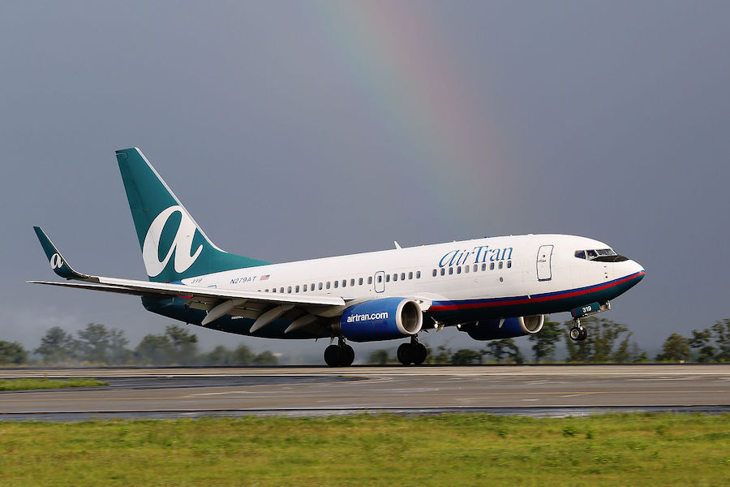Alaska Airlines [wiki]
Alaska Airlines is a major American airline headquartered in SeaTac, Washington, within the Seattle metropolitan area. It is the fifth largest airline in the United States when measured by fleet size, scheduled passengers carried, and the number of destinations served. Alaska, together with its regional partners Horizon Air and SkyWest Airlines, operate a large domestic route network, primarily focused on connecting from the Pacific Northwest and Alaska to over one hundred destinations in the contiguous United States, Hawaii, Canada, Costa Rica, and Mexico.
The airline operates out of five hubs, with its primary hub being at Seattle–Tacoma International Airport. Alaska Airlines is a member of Oneworld alliance, the third largest airline alliance in the world. As of 2020, the airline employs over 16,000 people and been ranked by J. D. Power and Associates as having the highest customer satisfaction of the traditional airlines for twelve consecutive years.
The official website can be found here. https://www.alaskaair.com
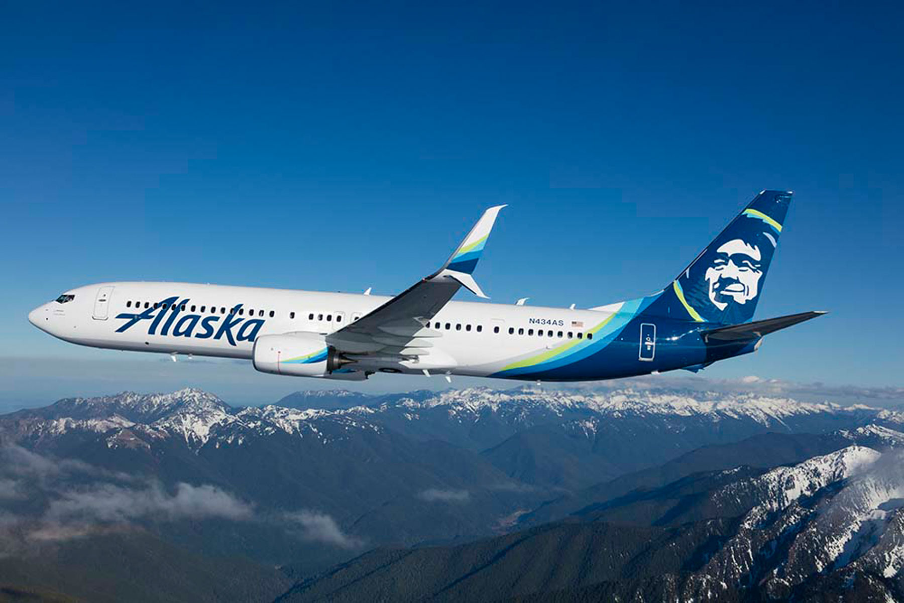Allegiant Air [wiki]
Allegiant Airlines (usually shortened to Allegiant) is an American ultra-low cost airline that operates scheduled and charter flights. As a major air carrier, it is the ninth-largest commercial airline in the United States.
Founded in 1997 as WestJet Express, it is wholly owned by Allegiant Travel Company, a publicly traded company with 4,000 employees and over US$2.6 billion market capitalization. The corporate headquarters are in Summerlin, Nevada, a suburb of Las Vegas.
The official website can be found here. https://www.allegiantair.com
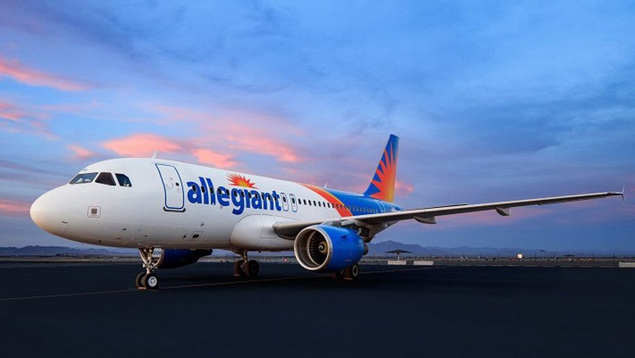America West Airlines [wiki]
America West Airlines was a United States major airline, founded in 1981, with service commencing in 1983, and having reached US$1 billion in annual revenue in 1989, headquartered in Tempe, Arizona. At the time of its acquisition of US Airways, America West had the unique distinction of being the only post-deregulation U.S. airline still operating under its original operating certificate. Their main hub was at Phoenix Sky Harbor International Airport, with a secondary hub at McCarran International Airport in Las Vegas.
The airline acquired US Airways in 2005 but took on the name of US Airways. America West served about 100 cities in the US, Canada, and Mexico; flights to Europe were on codeshare partners. In March 2005 the airline had 132 aircraft, with a single maintenance base at Phoenix Sky Harbor Airport. Regional jet and turboprop flights were operated on a code sharing basis by Mesa Airlines and Chautauqua Airlines as America West Express.
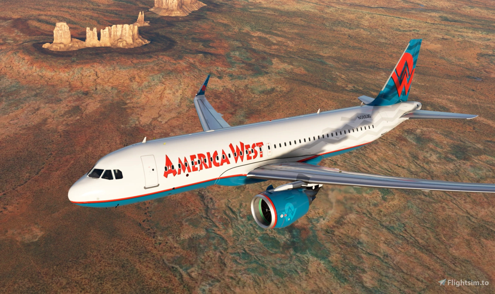American Airlines [wiki]
American Airlines (AA or AAL) is a major American airline headquartered in Fort Worth, Texas, within the Dallas–Fort Worth metroplex. It is the world's largest airline when measured by fleet size, scheduled passengers carried, and revenue passenger mile. American, together with its regional partners, operates an extensive international and domestic network with almost 6,800 flights per day to nearly 350 destinations in more than 50 countries.
American Airlines and American Eagle operate out of 10 hubs, with Dallas/Fort Worth (DFW) being its largest. The airline handles more than 200 million passengers annually with an average of more than 500,000 passengers daily. As of 2019, the company employs nearly 130,000 people
American Airlines operates its primary and the largest maintenance and repair operations (MRO) base in Tulsa in addition to the maintenance locations at its hubs.
The official website can be found here. https://www.aa.com
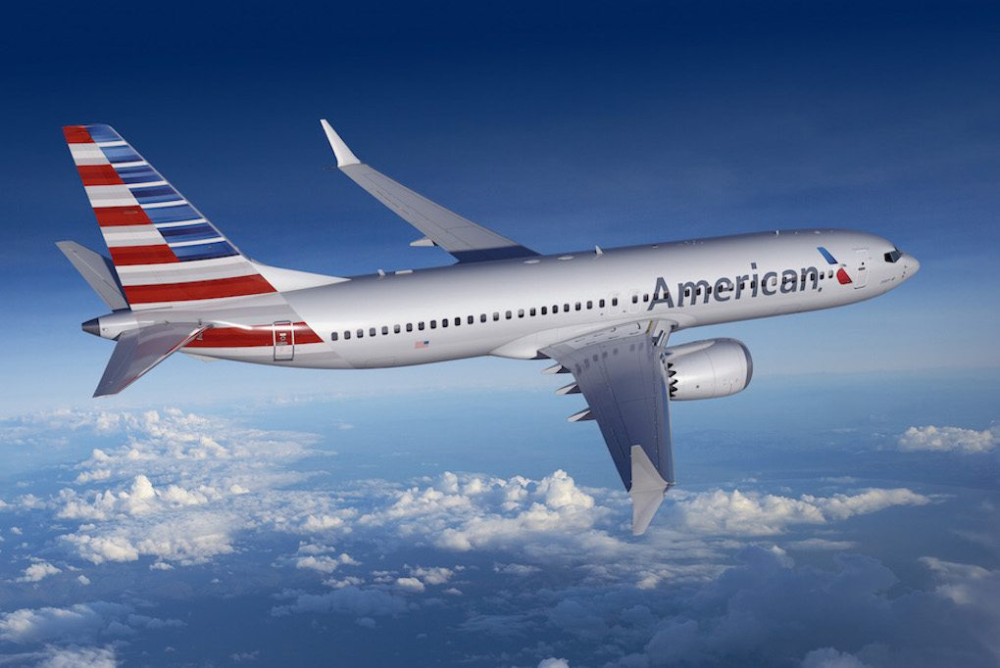Continental Airlines [wiki]
Continental Airlines was a major United States airline founded in 1934 and eventually headquartered in Houston, Texas. It had ownership interests and brand partnerships with several carriers.
Continental started out as one of the smaller carriers in the United States, known for its limited operations under the regulated era that provided very fine, almost fancy, service against the larger majors in important point-to-point markets, the largest of which was Chicago/Los Angeles.
The airline was acquired by UAL Corporation, the parent company of United Airlines, in an all-stock transaction on October 1, 2010.
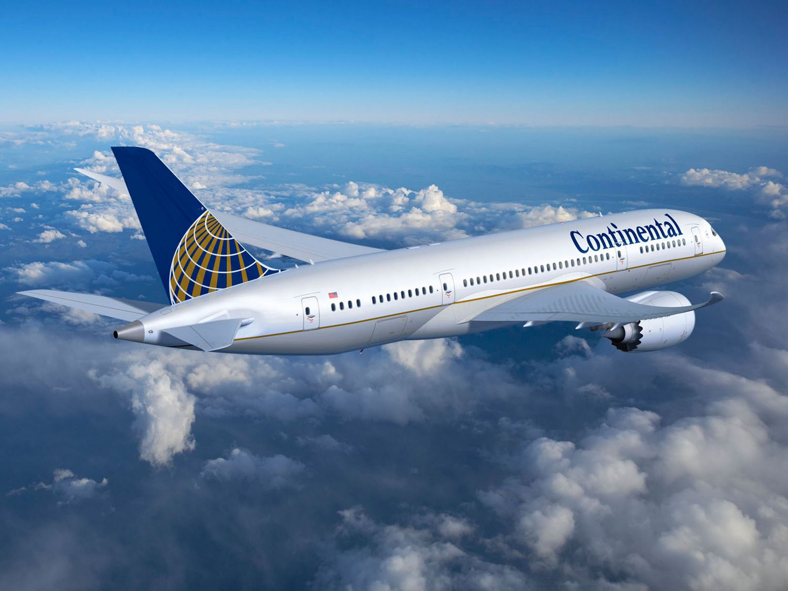Delta Air Lines [wiki]
Delta Air Lines, Inc., typically referred to as Delta, is one of the major airlines of the United States and a legacy carrier. It is headquartered in Atlanta, Georgia. The airline, along with its subsidiaries and regional affiliates, including Delta Connection, operates over 5,400 flights daily and serves 325 destinations in 52 countries on six continents. Delta is a founding member of the SkyTeam airline alliance.
Delta has nine hubs, with Atlanta being its largest in terms of total passengers and number of departures. It is ranked second among the world's largest airlines by number of scheduled passengers carried, revenue passenger-kilometers flown, and fleet size. It is ranked 69th on the Fortune 500. The company slogan is "Keep Climbing."
The official website can be found here. https://www.delta.com
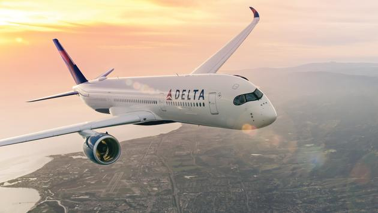Frontier Airlines [wiki]
Frontier Airlines is an American ultra low-cost carrier headquartered in Denver, Colorado. Frontier operates flights to over 100 destinations throughout the United States and 31 international destinations, and employs more than 3,000 staff. The carrier is a subsidiary and operating brand of Indigo Partners, LLC, and maintains a hub at Denver International Airport with numerous focus cities across the US.
In 2020, class-action lawsuits against Frontier were filed after the company refused to refund airfare for customers who could not travel during the COVID-19 pandemic. The company accepted part of the $25 billion in U.S. government funds to offset financial damage to the airline industry during the outbreak. In 2021, Frontier filed for an IPO.
The official website can be found here. https://www.flyfrontier.com

Hawaiian Airlines [wiki]
Hawaiian Airlines is the flag carrier[citation needed] and the largest airline in the U.S. state of Hawaii. It is the tenth-largest commercial airline in the US, and is based at Honolulu, Hawaii. The airline operates its main hub at Daniel K. Inouye International Airport on the island of Oʻahu and a secondary hub out of Kahului Airport on the island of Maui. The airline also maintained a crew base at Los Angeles International Airport. Hawaiian Airlines operates flights to Asia, American Samoa, Australia, French Polynesia, Hawaii, New Zealand, and the United States mainland. Hawaiian Airlines is owned by Hawaiian Holdings, Inc. of which Peter R. Ingram is the current President and Chief Executive Officer.
Hawaiian is the oldest US carrier that has never had a fatal accident or a hull loss throughout its history, and frequently tops the on-time carrier list in the United States, as well as the fewest cancellations, oversales, and baggage handling issues.
The official website can be found here. https://www.hawaiianairlines.com
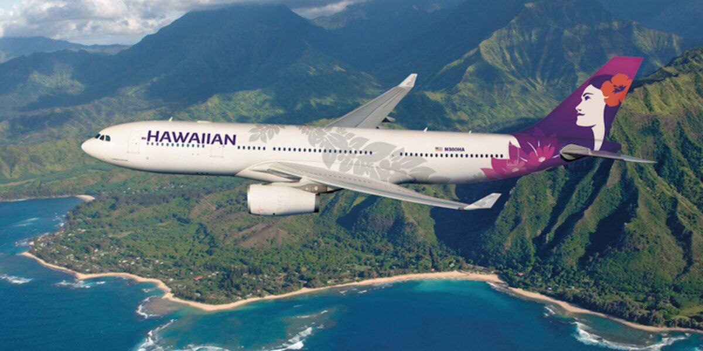jetBlue Airlines [wiki]
jetBlue Airlines is a major American low cost airline, and the seventh largest airline in North America by passengers carried. JetBlue Airways is headquartered in the Long Island City neighborhood of the New York City borough of Queens; it also maintains corporate offices in Utah and Florida.
In 2020, it ranked #394 financially on the Fortune 500 list of the largest United States corporations by total revenue. JetBlue operates over 1,000 flights daily and serves 100 domestic and international network destinations in the U.S., Mexico, the Caribbean, Central America and South America. JetBlue is not a member of any of the three major airline alliances but it has codeshare agreements with 21 airlines, including member airlines of Oneworld, SkyTeam, Star Alliance, and unaffiliated airlines.
The official website can be found here. https://www.jetblue.com
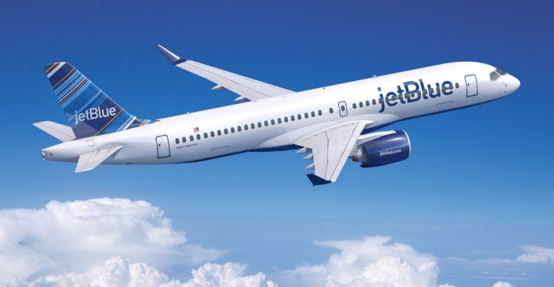Northwest Airlines [wiki]
Northwest Airlines was a major United States airline founded in 1926 and absorbed into Delta Air Lines, Inc. by a merger. The merger, approved on October 29, 2008, made Delta the largest airline in the world until the American Airlines-US Airways merger on December 9, 2013. Northwest continued to operate under its own name and brand until the integration of the carriers was completed on January 31, 2010.
Regional and commuter airline flights for Northwest were operated under the name Northwest Airlink by Big Sky Airlines, Eugene Aviation Services, Express Airlines I/II, Fischer Brothers Aviation, Mesaba Airlines, Northeast Express Regional Airlines, Pacific Island Aviation, Pinnacle Airlines, Precision Airlines, Simmons Airlines and Compass Airlines via respective code sharing agreements. Northwest Airlines was also a minority owner of Midwest Airlines, holding a 40% stake in the company.
The official website can be found here. https://northwestairlineshistory.org
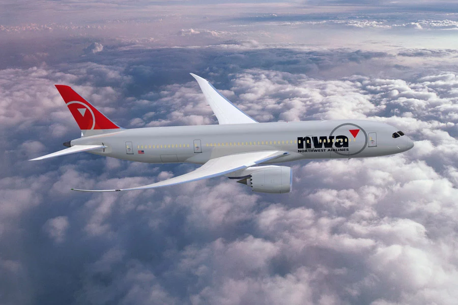Southwest Airlines [wiki]
Southwest Airlines typically referred to as Southwest, is one of the major airlines of the United States and the world's largest low-cost carrier airline. It is headquartered in Dallas, Texas and has scheduled service to 111 destinations in the United States and ten additional countries. As of 2018, Southwest carried more domestic passengers than any other United States airline.
The airline was established on March 15, 1967, by Herb Kelleher as Air Southwest Co. and adopted its current name, Southwest Airlines Co., in 1971, when it began operating as an intrastate airline wholly within the state of Texas, first flying between Dallas, Houston and San Antonio. The airline has nearly 60,000 employees and operates about 4,000 departures a day during peak travel season.
The official website can be found here. https://www.southwest.com
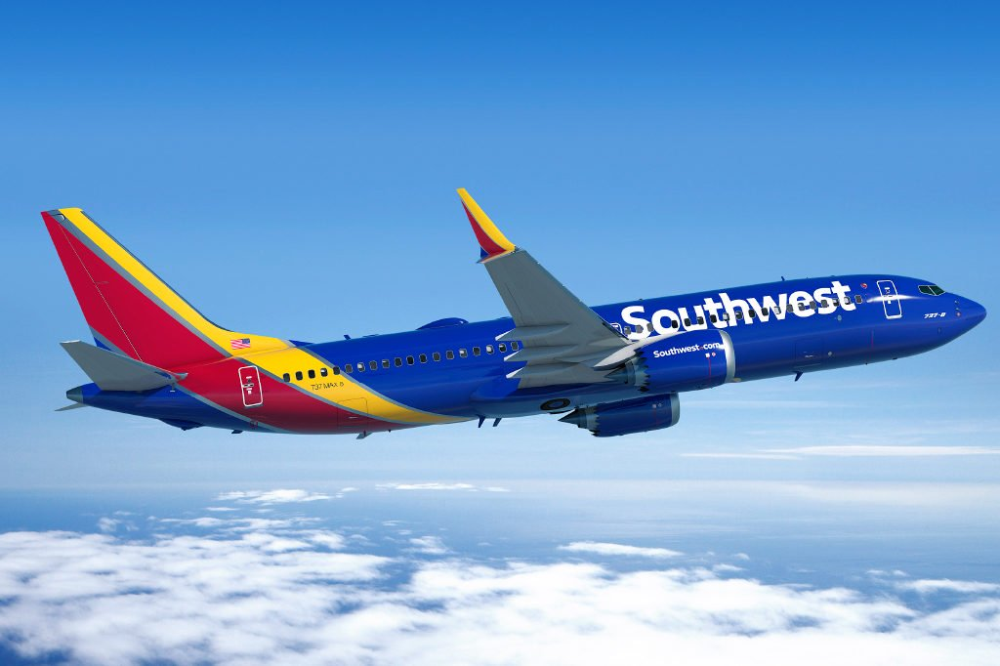Spirit Airlines [wiki]
Spirit Airlines (stylized as spirit) is an American ultra-low-cost carrier headquartered in Miramar, Florida in the Miami metropolitan area. Spirit operates scheduled flights throughout the United States and in the Caribbean and Latin America.
Spirit Airlines initially started as Clippert Trucking Company in 1964. The company changed its name to Ground Air Transfer, Inc., in 1974. The airline service was founded in 1983 in Macomb County, Michigan, by Ned Homfeld as Charter One Airlines, a Detroit-based charter tour operator providing travel packages to entertainment destinations such as Atlantic City, Las Vegas, and the Bahamas.
The official website can be found here. https://www.spirit.com
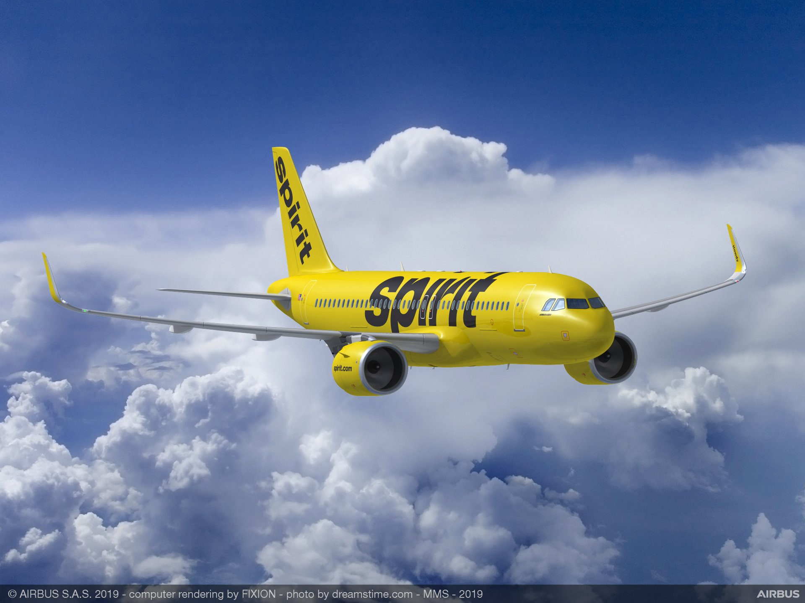United Airlines [wiki]
United Airlines (commonly referred to as United) is a major American airline headquartered at Willis Tower in Chicago, Illinois. United operates a large domestic and international route network spanning cities large and small across the United States and all six continents. Measured by fleet size and the number of routes, it is the third largest airline in the world.
United Airlines has eight hubs, with Chicago–O'Hare being its largest in terms of passengers carried and the number of departures. It is a founding member of the Star Alliance, the world's largest airline alliance with a total of 28 member airlines. Regional service is operated by independent carriers under the brand name United Express. United was established by the amalgamation of several airlines in the late 1920s, the oldest of these being Varney Air Lines, which was founded in 1926.
The official website can be found here. https://www.united.com/en/us
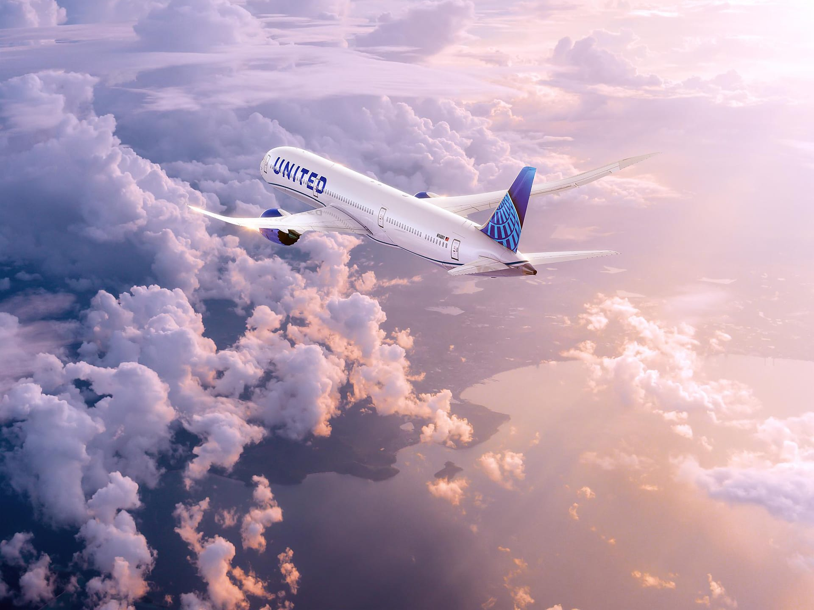US Airways [wiki]
US Airways (formerly USAir) was a major American airline. Before merging with American Airlines, it was headquartered in Tempe, Arizona.
The carrier operated the US Airways Shuttle, a US Airways brand that flew hourly between Logan International Airport in Boston, LaGuardia Airport in New York City, and Ronald Reagan Washington National Airport in Washington, D.C. As of October 2013, US Airways employed 32,312 people worldwide and operated 3,028 daily flights (1,241 US Airways Mainline, 1,790 US Airways Express). Roughly 60% of US Airways flights were operated by US Airways Express.
In February 2013 American Airlines and US Airways announced plans to merge, creating the largest airline in the world. The holding companies of American and US Airways merged effective December 9, 2013. In preparation for their eventual integration, the airlines began offering reciprocal frequent flyer benefits on January 7, 2014, and US Airways left Star Alliance to join Oneworld on March 31, 2014.
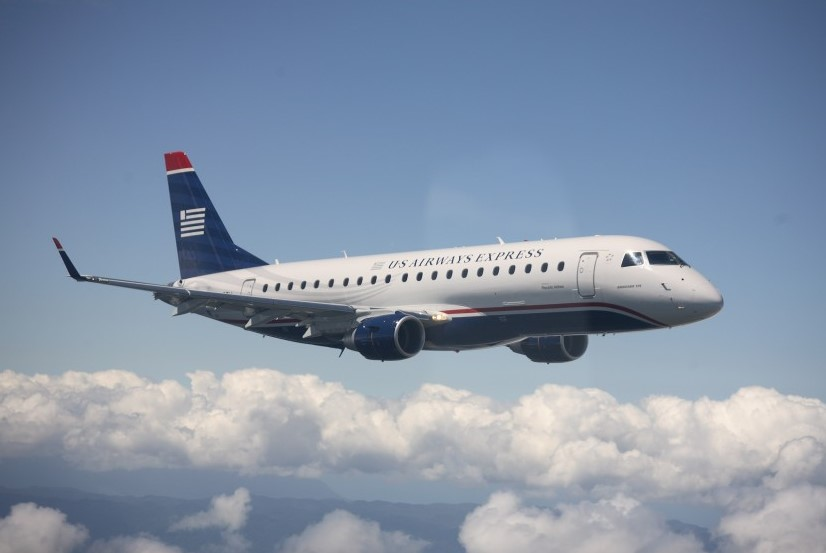